3.无监督学习#
3. 1PCA#
PCA 是一种用于减少数据中的变量的算法。它对变量之间存在相关性的数据很有效，是一种具有代表性的降维算法；
PCA 基于原有的变量构造新的变量；
PCA 可发现对象数据的方向和重要度
(a)图中画出正交的两条线，线的方向表示数据的方向，长度表示重要度。方向由构成新变量时对象数据变量的权重决定，而重要度与变量的偏差有关。
(b)图以这两条线为新轴对原始数据进行变换后得到的图形，变换后的数据称为主成分得分。按主成分轴的重要度的值从高到低排序，依次称它们为第一主成分、第二主成分。
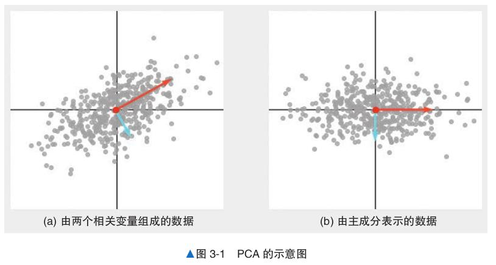
接下来介绍PCA 寻找主成分的步骤
计算协方差矩阵。
对协方差矩阵求解特征值问题，求出特征向量和特征值。
以数据表示各主成分方向。
下面是对 scikit-learn 内置的鸢尾花数据使用 PCA 的示例代码，用于将 4 个特征变量变换为 2个主成分。
from sklearn.decomposition import PCA
from sklearn.datasets import load_iris
data = load_iris()
n_components = 2 #将减少后的维度设置为2
model = PCA(n_components=n_components)
model = model.fit(data.data)
print(model.transform(data.data)[:10]) # 变换后的数据
---------------------------------------------------------------------------
ModuleNotFoundError Traceback (most recent call last)
Cell In[1], line 1
----> 1 from sklearn.decomposition import PCA
2 from sklearn.datasets import load_iris
3 data = load_iris()
ModuleNotFoundError: No module named 'sklearn'
PCA 可以将原始数据中的变量表示为新的轴的主成分。这些主成分按照贡献率大小排序，分别 为第一主成分、第二主成分……照此类推。这时通过计算累计贡献率，我们可以知道使用到第几个 主成分为止可以包含原始数据多少比例的信息。
3.2 LSA#
使用 LSA 就可以根据大量文本自动计算单词和单词的相似度，以及单词和文本的相似度。 通过 LSA 对文本和单词的矩阵进行降维，将其变换为潜在语义空间（图 3-5）。这种变换使用 矩阵分解进行。矩阵分解是指将某个矩阵表示为多个矩阵的乘积的形式。
下面结合具体的例子来讲解矩阵分解和降维。 首先将以下文本变换为矩阵 X。矩阵 X 的各元素是文本中出现的单词的个数
坐汽车去公司
坐车去的
在餐厅吃汉堡牛肉饼
在餐厅吃意大利面
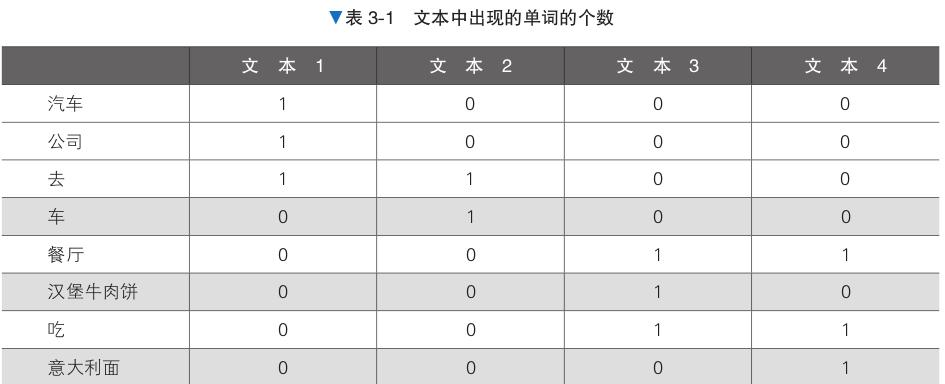
下一步：通过矩阵变换进行矩阵分解和降维，将4维的特征转换为2维
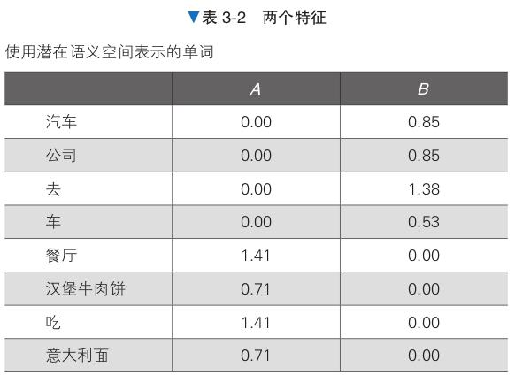
此时得到的数据可以这样理解：
“汽车”和“车”拥有变量 B 的值，
“汉堡牛肉饼”和“意大利面”拥有变量 A 的值。
A 和 B 的特征值显示了各个单词之间的关联性
下面使用 Python 代码解决前面探讨的问题。
from sklearn.decomposition import TruncatedSVD
data = [[1, 0, 0, 0],
[1, 0, 0, 0],
[1, 1, 0, 0],
[0, 1, 0, 0],
[0, 0, 1, 1],
[0, 0, 1, 0],
[0, 0, 1, 1],
[0, 0, 0, 1]]
n_components = 2 # 潜在变量的个数
model = TruncatedSVD(n_components=n_components)
model.fit(data)
print(model.transform(data)) # 变换后的数据
print(model.explained_variance_ratio_) # 贡献率
print(sum(model.explained_variance_ratio_)) # 累计贡献率
[[ 0.00000000e+00 8.50650808e-01]
[ 0.00000000e+00 8.50650808e-01]
[ 2.71947991e-16 1.37638192e+00]
[ 2.71947991e-16 5.25731112e-01]
[ 1.41421356e+00 -2.02192262e-16]
[ 7.07106781e-01 -2.02192262e-16]
[ 1.41421356e+00 -2.02192262e-16]
[ 7.07106781e-01 0.00000000e+00]]
[0.38596491 0.27999429]
0.6659592065833293
LSA算法的注意事项
变换后的矩阵有时难以解释。在通过奇异值分解降维时，各个维度可能是正交的，矩阵中的元素也可能是负值。
LSA 的计算成本有时很高。特别是在用于文本时，由于原始矩阵的维度就是单词的个数，所以 LSA 必须在非常大的矩阵上进行奇异值分解。
随着新词的加入，原有的矩阵必须重新创建，我们必须在此基础上重新计算，所以模型的更新难度很大。
3.3NMF#
NMF 是一种矩阵分解方法，在计算机视觉、文本挖掘、推荐等各个领域都有应用。与LSA一样，它也可以找到矩阵的潜在变量。
NMF具有一下特点
原始矩阵的元素是非负数。
分解后矩阵的元素是非负数。
没有“潜在语义空间的每一个维度都是正交的”这一约束条件。
算法说明 NMF 作为一种矩阵分解方法，通过将原始数据分解为两个矩阵来降维。设原始数据为 n 行 d 列的矩阵 V，将其表示为两个矩阵 W 和 H 的乘积。W 是 n 行 r 列的矩阵，H 是 r 行 d 列的矩阵，WH 是原始矩阵 V 的近似，选择比 d 小的 r 就可以进行降维。
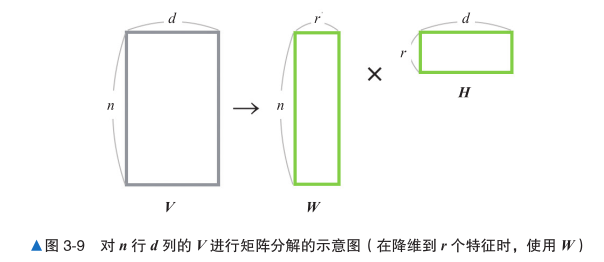
在求 W 和 H 的过程中，NMF 在 W ≥ 0、H ≥ 0 的条件下，使 WH 接近 V。 NMF 采取“将 H 视为常数，更新 W ”“将 W 视为常数，更新 H”的方式交替更新 W 和 H。 灰色的点为原始矩阵 V，绿色的点为近似矩阵 WH。随着计算的进行，我们可以看到近似矩阵 越来越接近原始矩阵。此外，红线和蓝线是潜在空间的轴，所有近似矩阵的图形都能在潜在空间的轴上表示出来。
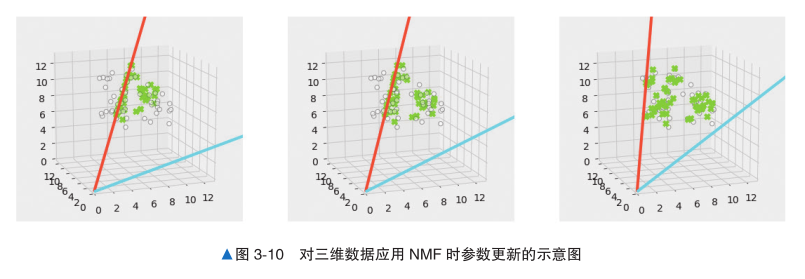
下面是使用 scikit-learn 运行 NMF 算法的示例代码
from sklearn.decomposition import NMF
from sklearn.datasets._samples_generator import make_blobs
centers = [[5, 10, 5], [10, 4, 10], [6, 8, 8]]
V, _ = make_blobs(centers=centers)
n_components = 2
# 潜在变量的个数
# 以centers为中心生成数据
model = NMF(n_components=n_components)
model.fit(V)
W = model.transform(V) # 分解后的矩阵
H = model.components_
print(W[:10])
print(H)
[[0.57375552 0.63740946]
[0.16462067 1.01137901]
[0.24396182 1.09817687]
[0.84111607 0.21069069]
[0.76569886 0.27585125]
[0.74131722 0.50097646]
[0.62518984 0.57436808]
[0.25472553 0.92742861]
[0.76277361 0.39397145]
[0.57470649 0.55103464]]
[[ 3.70702256 11.72794881 4.80640961]
[ 7.84046896 1.93365196 8.4614337 ]]
3.4 LDA#
我们用一个具体的例子进行解释，假设例句中的主题个数为2个
We go to school on weekdays.
I like playing sports.
They enjoyed playing sports in school.
Did she go there after school?
He read the sports columns yesterday. LDA 可以利用主题分布和单词分布创建文本数据。
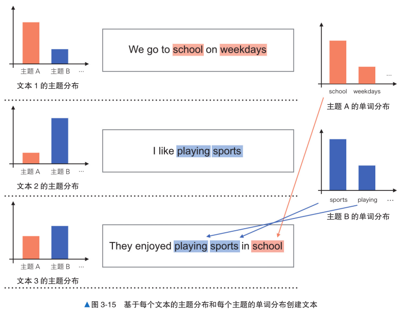 具体做法是基于文本的主题分布选择主题，之后基于主题的单词分布选择文本中的单词。重复 这一操作，就能得到生成文本的模型。下面的“算法说明”部分将介绍如何根据输入数据计算主题 分布和单词分布。
基于文本的主题分布为单词分配主题。
基于分配的主题的单词分布确定单词。
对所有文本中包含的单词执行步骤 1 和步骤 2 的操作。
算法说明
为各文本的单词随机分配主题。
基于为单词分配的主题，计算每个文本的主题概率。
基于为单词分配的主题，计算每个主题的单词概率。
计算步骤 2 和步骤 3 中的概率的乘积，基于得到的概率，再次为各文本的单词分配主题。
重复步骤 2 ~ 步骤 4 的计算，直到收敛。
3.5 k -means#
k-means 算法是一种有代表性的聚类算法。由于该算法简单易懂，又可以用于比较大的数据集， 所以在市场分析和计算机视觉等领域得到了广泛的应用。 通过计算数据点与各重心的距离，找出离得最近的簇的重心，可以确定数据点所属的簇。求簇 的重心是 k-means 算法中重要的计算。
k-means 算法的典型计算步骤如下
从数据点中随机选择数量与簇的数量相同的数据点，作为这些簇的重心。
计算数据点与各重心之间的距离，并将最近的重心所在的簇作为该数据点所属的簇。
计算每个簇的数据点的平均值，并将其作为新的重心。
重复步骤 2 和步骤 3，继续计算，直到所有数据点不改变所属的簇，或者达到最大计算步数。
下面是对鸢尾花数据集应用 k-means 算法的代码，簇的数量设置为 3。
from sklearn.cluster import KMeans
from sklearn.datasets import load_iris
data = load_iris()
n_clusters = 3
# 将簇的数量设置为3
model = KMeans(n_clusters=n_clusters)
model.fit(data.data)
print(model.labels_)
# 各数据点所属的簇
print(model.cluster_centers_)
# 通过fit()计算得到的重心
[1 1 1 1 1 1 1 1 1 1 1 1 1 1 1 1 1 1 1 1 1 1 1 1 1 1 1 1 1 1 1 1 1 1 1 1 1
1 1 1 1 1 1 1 1 1 1 1 1 1 0 0 2 0 0 0 0 0 0 0 0 0 0 0 0 0 0 0 0 0 0 0 0 0
0 0 0 2 0 0 0 0 0 0 0 0 0 0 0 0 0 0 0 0 0 0 0 0 0 0 2 0 2 2 2 2 0 2 2 2 2
2 2 0 0 2 2 2 2 0 2 0 2 0 2 2 0 0 2 2 2 2 2 0 2 2 2 2 0 2 2 2 0 2 2 2 0 2
2 0]
[[5.9016129 2.7483871 4.39354839 1.43387097]
[5.006 3.428 1.462 0.246 ]
[6.85 3.07368421 5.74210526 2.07105263]]
/opt/anaconda/lib/python3.11/site-packages/sklearn/cluster/_kmeans.py:870: FutureWarning: The default value of `n_init` will change from 10 to 'auto' in 1.4. Set the value of `n_init` explicitly to suppress the warning
warnings.warn(
3.6 混合高斯分布#
高斯分布是混合高斯分布的基础，是统计学和机器学习中经常使用的一种概率分布。数据的分 布可以用均值和方差表示，均值描述数据的中心位置，方差描述数据的离散程度。混合高斯分布是 以多个高斯分布的线性叠加来表示数据的模型。
算法说明 混合高斯分布的学习过程是从给定的数据点中找到每个高斯分布的均值和方差的过程。作为例子，我们采用一维数据。 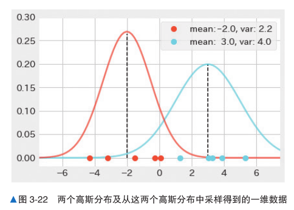 红色的点是从均值为 - 2.0、方差为 2.2 的高斯分布中采样得到的数据；蓝色的点是从均值为 3.0、方差为 4.0 的高斯分布中采样得到的数据。
混合高斯分布必须在不知道每个数据点的类别的情况下求出参 数。因此，我们需要在推测“每个数据点属于某个类别”的权重的基础上，计算出数据点的各个类 别的高斯分布的参数（均值和方差）。 详细分为以下步骤
初始化参数（各高斯分布的均值和方差）。
对每个类别计算数据点的权重。
根据步骤 2 中计算出的权重重新计算参数。
重复步骤 2 和步骤 3，直到通过步骤 3 更新前后的每个均值的变化足够小。 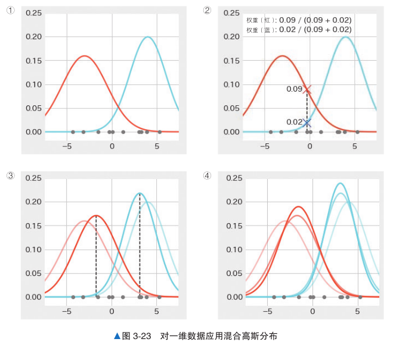
下面是对包含 3 个品种的鸢尾花数据应用混合高斯分布的示例代码。
from sklearn.datasets import load_iris
from sklearn.mixture import GaussianMixture
data = load_iris()
n_components = 3
# 高斯分布的数量
model = GaussianMixture(n_components=n_components)
model.fit(data.data)
print(model.predict(data.data))
print(model.means_)
# 预测类别
# 各高斯分布的均值
print(model.covariances_)
# 各高斯分布的方差
[1 1 1 1 1 1 1 1 1 1 1 1 1 1 1 1 1 1 1 1 1 1 1 1 1 1 1 1 1 1 1 1 1 1 1 1 1
1 1 1 1 1 1 1 1 1 1 1 1 1 2 2 2 2 2 2 2 2 2 2 2 2 2 2 2 2 2 2 0 2 0 2 0 2
2 2 2 0 2 2 2 2 2 0 2 2 2 2 2 2 2 2 2 2 2 2 2 2 2 2 0 0 0 0 0 0 0 0 0 0 0
0 0 0 0 0 0 0 0 0 0 0 0 0 0 0 0 0 0 0 0 0 0 0 0 0 0 0 0 0 0 0 0 0 0 0 0 0
0 0]
[[6.54639415 2.94946365 5.48364578 1.98726565]
[5.006 3.428 1.462 0.246 ]
[5.9170732 2.77804839 4.20540364 1.29848217]]
[[[0.38744093 0.09223276 0.30244302 0.06087397]
[0.09223276 0.11040914 0.08385112 0.05574334]
[0.30244302 0.08385112 0.32589574 0.07276776]
[0.06087397 0.05574334 0.07276776 0.08484505]]
[[0.121765 0.097232 0.016028 0.010124 ]
[0.097232 0.140817 0.011464 0.009112 ]
[0.016028 0.011464 0.029557 0.005948 ]
[0.010124 0.009112 0.005948 0.010885 ]]
[[0.2755171 0.09662295 0.18547072 0.05478901]
[0.09662295 0.09255152 0.09103431 0.04299899]
[0.18547072 0.09103431 0.20235849 0.06171383]
[0.05478901 0.04299899 0.06171383 0.03233775]]]
3.7 LLE#
LLE 是一种被称为流形学习（manifold learning）的算法，它的目标是对具有非线性结构的数据 进行降维。
算法说明 LLE 算法要求数据点由其近邻点的线性组合来表示。我们用一个例子来解释 对于数据点 x1，以最接近 x1 的两个点 x2 和 x3 的线性组合来表示它。 当 x1 = (1, 1, 1)，x2 = ( - 1, 0, - 1)， x3 = (2, 3, 2) 时 的 情 况， 如 果 x2 和 x3 的 权 重 分 别 为 w12 = - 1/3，w13 = 1/3， 那 么 x1 可 以 表 示 为 x1 = w12x2 + w13x3。如果在不扭转三维空间的 3 个点之间的关系的前提下把它们移动到二维空间，我 们就可以继续使用这些权重来以近邻点表示 x1。 实际的数据虽然在三维空间上呈现瑞士卷那样的卷曲结构，但 LLE 将其视为局部的点与点的 关系，即近邻点之间是不弯曲的空间，所以仍使用近邻点来表示数据点。
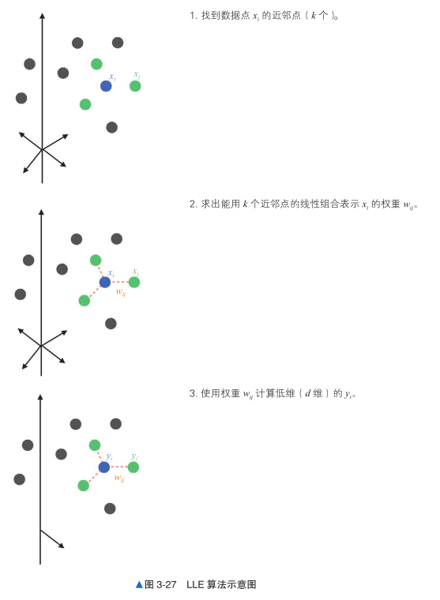
下面是对瑞士卷数据集应用 LLE 的代码，其中设置的近邻点的数量为 12。
from sklearn.datasets import make_swiss_roll
from sklearn.manifold import LocallyLinearEmbedding
data, color = make_swiss_roll(n_samples=1500)
n_neighbors = 12
n_components = 2
# 近邻点的数量
# 降维后的维度
model = LocallyLinearEmbedding(n_neighbors=n_neighbors,
n_components=n_components)
model.fit(data)
print(model.transform(data)) # 变换后的数据
[[-0.00745799 0.01458373]
[-0.00644212 0.00619955]
[-0.01741644 -0.03293017]
...
[ 0.03863832 -0.0091499 ]
[ 0.02496744 -0.01135749]
[-0.0015111 -0.00145397]]
3.8 t -SNE#
t-SNE 是一种流形学习算法，用于实现复杂数据的可视化。我们可以通过将高维数据降维为二 维或三维来实现可视化。
下面是将 t-SNE 应用于手写数字数据集的代码，其中设置的降维后的维度是 2。
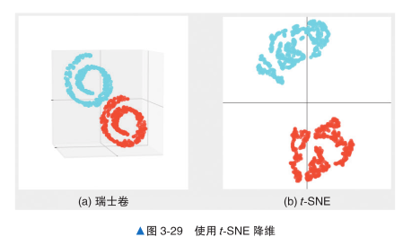
算法说明
对于所有的组 i、j，使用高斯分布来表示 xi 和 xj 的相似度。
在低维空间中随机配置与 x i 相同数量的点 y i，对于所有的组 i、j，使用 t 分布表示 y i 和 y j 的 相似度。
更新数据点 yi，使得步骤 1 和步骤 2 中定义的相似度分布尽可能相似。
重复步骤 3，直到达到收敛条件。
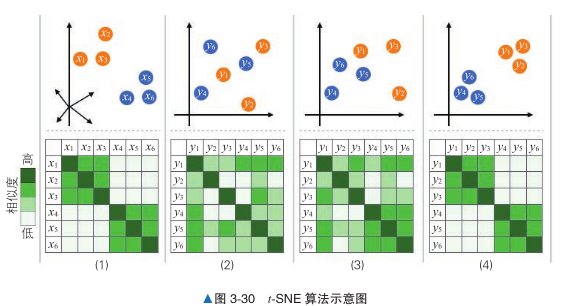 上图中，横轴是距离，纵轴是相似度。从图中可以看出，数据之间的距离越近，相似度 越高；距离越远，相似度越低。我们首先在原来的高维空间中用高斯分布计算相似度，以 pij 这个分 布表示。这个 pij 表示数据点 xi 和 xj 之间的相似度。 接下来，在低维空间中随机配置与 x i 对应的数据点 y i。我们也对这个数据点计算表示相似度的 qij，不过这时使用的是 t 分布。
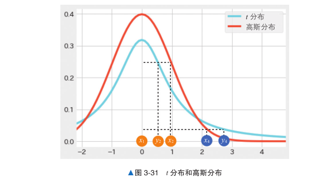 在计算出 pij 和 qij 之后，我们来更新数据点 yi，使 qij 具有与 pij 相同的分布，这样就能够以低维 空间的 y i 再现高维空间中各 x i 的相似度的关系。由于这时在低维空间使用的是 t 分布，所以可以看 到，当再现大的相似度时，数据点在低维空间中配置的距离更近；反之，当再现小的相似度时，数 据点在低维空间中配置的距离更远。
from sklearn.manifold import TSNE
from sklearn.datasets import load_digits
data = load_digits()
n_components = 2
# 设置降维后的维度为2
model = TSNE(n_components=n_components)
print(model.fit_transform(data.data))
[[ -3.016503 54.184124 ]
[ 10.382164 -11.731034 ]
[-13.537349 -18.758026 ]
...
[ -5.8934097 -10.716763 ]
[-21.116165 15.562969 ]
[-14.097248 -6.917012 ]]